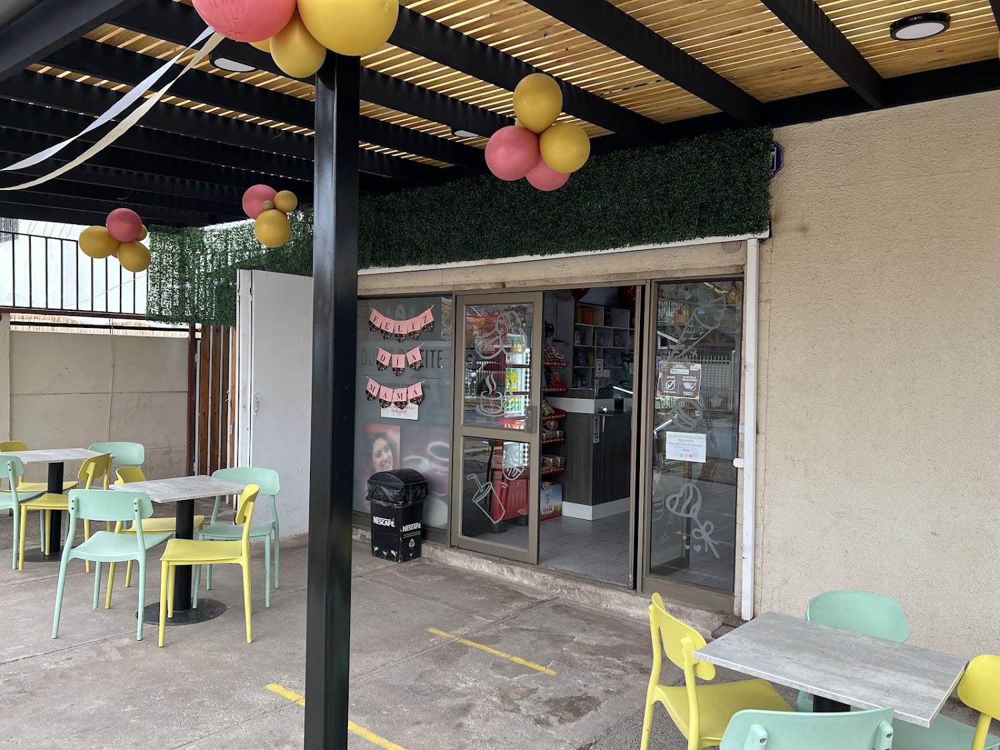
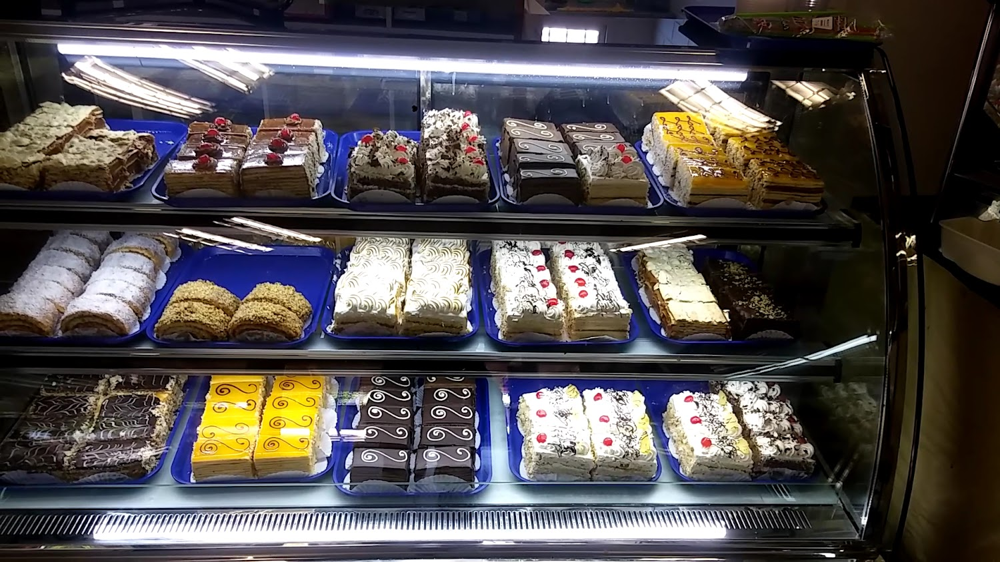
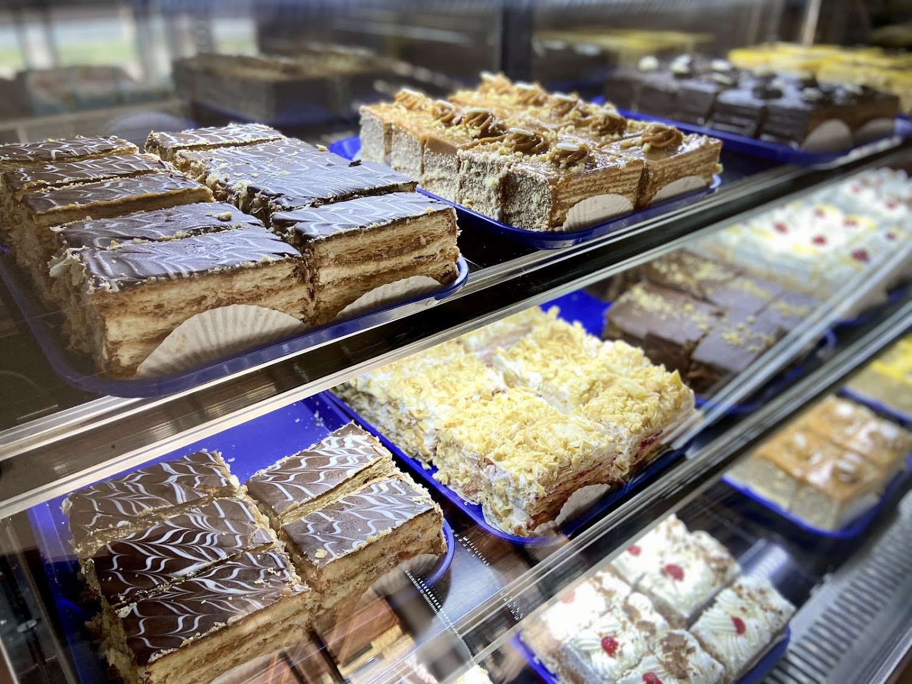
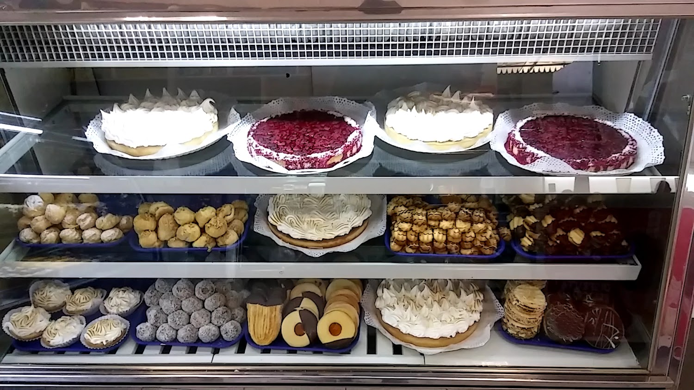

Pan y amasandería
"Es nuestra amasandería habitual", dice una de sus reseñas. Pan del día, horneado ahí mismo.

Amasandería y pastelería · San Bernardo
Pastelería fina y pan del día en Los Canelos 759, con terraza techada para sentarse a tomar café. Y si prefieres, te lo llevamos.
"Es nuestra amasandería habitual", dice una de sus reseñas. Pan del día, horneado ahí mismo.
El cheesecake de frutos rojos es el producto que su propia ficha destaca. El pastel panqueque de manjar es el más nombrado en las reseñas.
Consumo en el lugar, para llevar y entrega a domicilio — los tres servicios están confirmados en su ficha de Google.
DU BLÉ es amasandería y pastelería en San Bernardo: pan del día, tortas y pasteles, y una terraza techada con seto verde donde tomarse un café.
Con 4.6 estrellas y 218 opiniones, lo que más repiten quienes la visitan es la variedad de pasteles y lo fresco de los productos. Una reseña lo deja claro: "de los mejores locales del sector, 100% recomendado".



Arma tu pedido y consúltanos los precios del día. Los productos de esta carta son los que aparecen nombrados en su propia ficha de Google y en sus reseñas reales.
"El pastel panqueque manjar de aquí, exquisito. Hay harta variedad de pasteles y el café también es muy rico, y también la atención muy buena. En resumen, de los mejores locales del sector: 100% recomendado."
"Es nuestra amasandería habitual, tienen muy ricos pasteles y tortas."